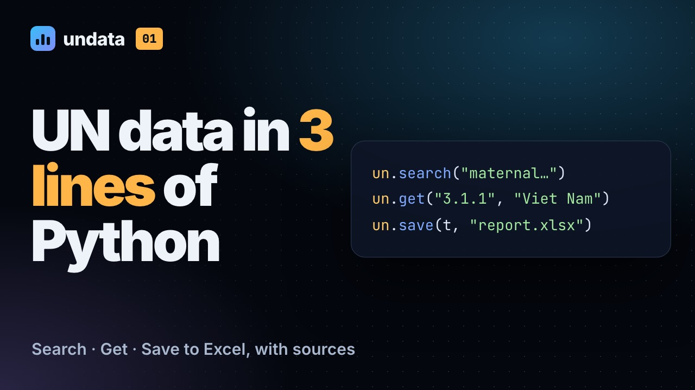
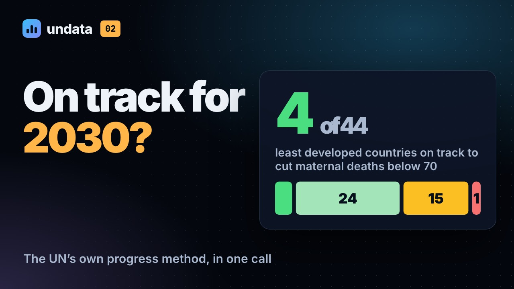
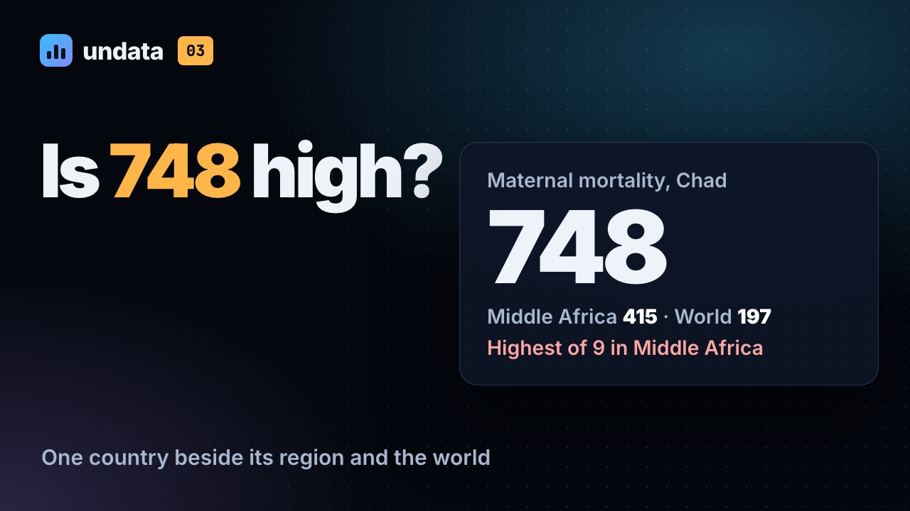
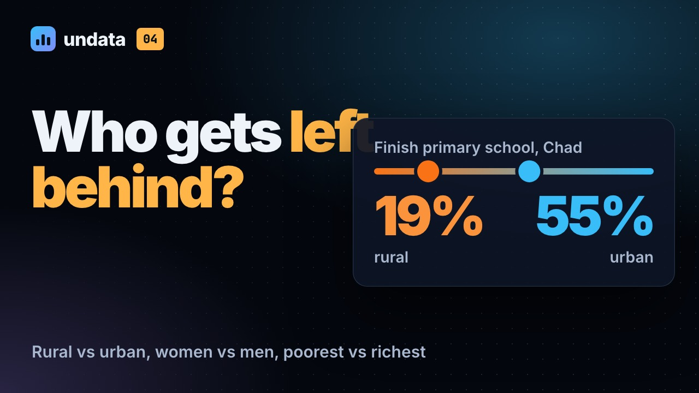
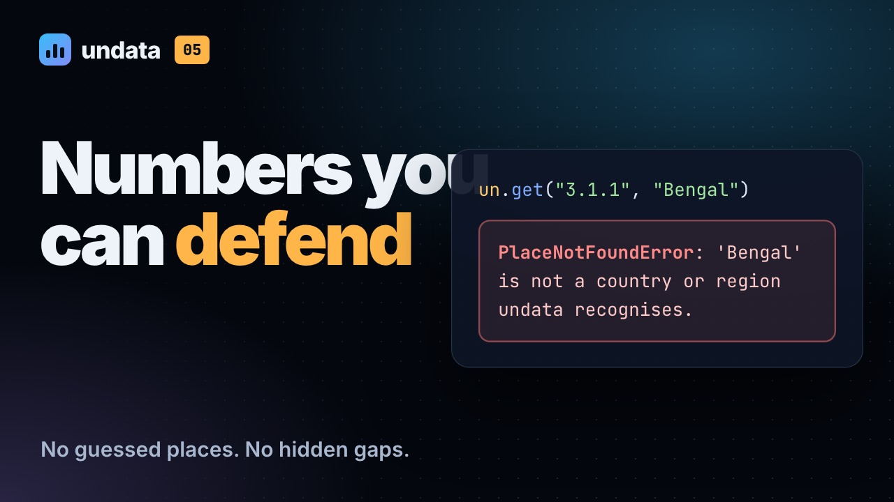
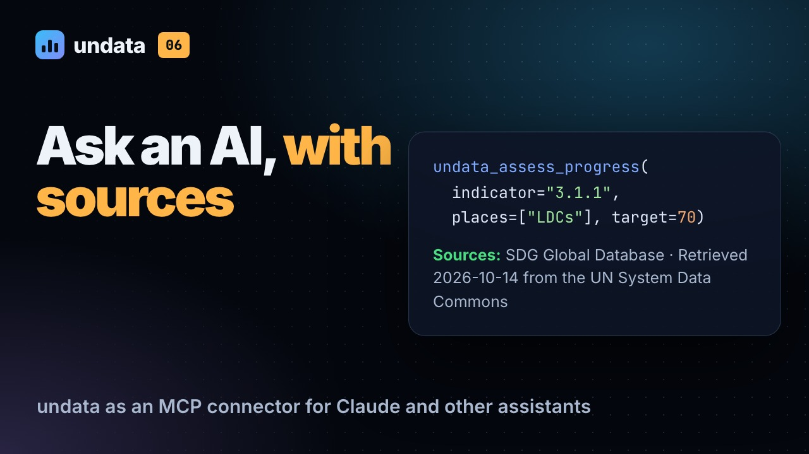

// videos · 11 short videos, two seasons
Watch undata do the work.
Each video is one real request from start to finish: the code, what comes back, and the chart, slide, file or sentence you would send. Captions are burned in, and every video has a transcript below it.
Six requests, start to finish in Python: a sourced spreadsheet, SDG progress by the UN method, a country in context, who is left behind, the safeguards, and an AI assistant that cites its numbers.

01Three lines to a spreadsheet

02On track for 2030?

03One country, in context

04Who gets left behind?

05Numbers you can defend

06Ask an AI assistant, with sources
Five data products, one per everyday tool: a report chart in Excel, an animated chart in Flourish, a one-slide briefing in PowerPoint, a first draft with Copilot, and a publication figure in Python and R.
// season 1 · undata in python
undata in Python
Six requests, start to finish in Python: a sourced spreadsheet, SDG progress by the UN method, a country in context, who is left behind, the safeguards, and an AI assistant that cites its numbers.
// 01 — 2:00
Three lines to a spreadsheet
Get official UN statistics into Python and Excel in three lines: search an indicator in plain words, fetch it for any country, and save a spreadsheet that carries its own citations.
Transcript
0:00 You need a UN figure for a report, and it has to hold up. Here is how to get it in three lines of Python.
0:06 The UN System Data Commons holds statistics from twenty-six UN System entities. undata puts all of it one import away, in plain words, with nothing to register for.
0:16 Install it once, from the Python Package Index. It works in Jupyter, in Google Colab, or in a plain script.
0:24 Start with what you want to measure, in your own words. un.search lists every matching indicator, with who publishes it, how many places have data, and for which years. This one is the SDG series, from the Global SDG Indicators Database. Copy its ID from the first column.
0:42 Then ask for the numbers. Where an SDG number points to one series, the number is enough. Countries go in the way you would write them in an email. What comes back is an ordinary pandas table, one row per country and year, with the unit and the source on every row.
0:58 Plotted, it tells a story. In Bangladesh, maternal deaths fell from 523 per hundred thousand live births in 2000, to 115 in 2023. In Viet Nam, from 83 to 48.
1:12 Now the line that makes it usable. un.save writes an Excel file, ready to send.
1:18 The data sits on the first sheet. The second holds the sources: the publisher, the link, and a citation you can paste straight into a footnote. It names the agency that measured the figure, not just the website you found it on. A third sheet says how complete the table is.
1:34 Prefer not to write Python at all? The same steps work from a terminal. One command, and the spreadsheet is saved.
1:41 Search. Get. Save. Three lines, and every number arrives with its unit, its year, and its source.
1:49 Install it with pip. Twelve worked examples are on the documentation site. Next: are countries on track for 2030?
// 02 — 1:59
On track for 2030?
Assess SDG progress the way the UN Statistics Division does — baseline, current pace, projection to 2030, target — for 44 least developed countries in a single Python call.
Transcript
0:00 2030 is close. For every country in your report, someone will ask: are they on track? Here is how to answer it the way the UN does.
0:09 Take SDG target three point one. Bring maternal mortality below seventy per hundred thousand live births by 2030. Will the least developed countries get there?
0:19 One call. LDCs means the UN’s current list of forty-four least developed countries. Say that lower is better, and give it the target. Each country comes back with a status, its 2015 baseline, its latest value, and where it is heading.
0:34 How does it decide? Take Bangladesh. It starts from the 2015 baseline: 204 deaths per hundred thousand. By 2023, 115. The method takes that rate of decline, nearly seven percent a year, and carries it forward to 2030. Sixty-nine point nine. Against a target of seventy, that is on track. By a hair.
0:56 Ethiopia cut its rate even faster, more than halving it since 2015. But it started at 401. Carry the same pace forward, and it reaches about 104 by 2030. Real progress, but not enough. The method calls that moderate progress: acceleration needed.
1:12 Now run that for all forty-four. 4 are on track. 24 are making moderate progress, but need to speed up. 15 are moving too slowly to get there. And one, Tuvalu, is going backwards.
1:25 un.chart turns the table into the chart a progress report would use. For each country, the baseline, the latest value, and the projection, against the target line. And underneath, the source and the method, cited.
1:38 And un.describe writes the paragraph, worked out from the numbers, naming the countries on track, the one going backwards, and the method, so a reviewer can check it.
1:47 Any indicator, any group of countries, the UN’s own method. Next: one country, set beside its region and the world.
// 03 — 1:46
One country, in context
Put any country's statistics in context — beside its UN M49 region and the world, ranked within the region — with one Python call, then chart it and write the paragraph.
Transcript
0:00 Seven hundred and forty-eight. Is that high? A number on its own says very little. Here is how to put a country in context, in one call.
0:10 un.profile takes a country and the indicators you care about. SDG numbers or full IDs, with a comment so the next person knows what each one is. It finds the country’s region in the UN’s M49 standard, Middle Africa for Chad, sets each value beside the region and the world, and ranks it within the region.
0:29 Maternal mortality: 748, against 197 for the world, and the highest of nine countries in Middle Africa. Child deaths under five: also the highest. Fewer than three in ten children finish primary school. Thirteen percent of people have electricity, the lowest in the region. But women hold a third of the seats in parliament, ahead of the region and the world.
0:53 Two rows have no Middle Africa marker. The agency publishes no regional figure there, so undata leaves it empty, rather than inventing an average from whichever countries happen to report.
1:04 un.chart draws the same thing for your document: one row per indicator, each on its own scale, so a rate in the hundreds and a percentage can share a page, with the source line underneath.
1:15 And un.describe writes it out: each value, its year, its rank, and the world figure. Notice the years. The school figure is from 2019, the parliament figure from 2026. The table never hides that.
1:30 Swap Chad for any country. Swap the list for the indicators in your mandate. The same call makes the briefing page.
1:37 Context in one call, with every year and source on the table. Next: who gets left behind.
// 04 — 1:37
Who gets left behind?
Measure who is left behind: compare rural and urban, women and men, or the poorest and richest fifth — in the same year, for every country — with one Python call.
Transcript
0:00 National averages hide people. Leaving no one behind means looking at the gaps: between towns and villages, women and men, the poorest and the richest. Here is how to measure one, properly.
0:12 Start by asking what an indicator can be split by. Here, primary school completion. un.breakdowns lists every breakdown the agency publishes: by sex, by rural and urban area, and by wealth, in fifths.
0:26 un.gap compares two groups across countries. Choose the breakdown, here urbanization. For each country it takes the latest year in which both groups have a value, so the gap is never one survey against another. You get both values, the ratio, and the difference.
0:42 In Chad, 19 percent of rural children finish primary school, against 55 percent in towns. A rural child is about a third as likely to finish. Niger and Mali show the same pattern. But in Bangladesh, rural children are slightly ahead, and Nepal is close to parity. So a gap like Chad’s is not inevitable.
1:02 un.chart sorts the countries by the gap, and prints the ratio and the year beside each one. Chad’s figure is from 2019; the others are more recent, and the chart says so.
1:12 And the summary states the finding: where the gap is widest, and which countries are at parity. The sentence in your report comes straight from the data.
1:20 Change one word to compare girls and boys, or the poorest fifth with the richest, wherever the agency publishes that breakdown.
1:27 Gaps measured like with like, in the same year. Next: the safeguards that make these numbers defensible.
// 05 — 1:54
Numbers you can defend
The safeguards that make a UN statistic defensible in a report: undata never guesses a place, names every missing country instead of showing zero, flags mixed years, and cites the agency.
Transcript
0:00 A wrong number in a UN report is worse than no number at all. undata is built to fail loudly, never quietly. Here are the safeguards, and what they look like.
0:11 It never guesses which place you meant. Missing data is named, never shown as zero. Values from different years are flagged. And every table carries its citation.
0:22 Ask data.un.org’s search box about child mortality in Bengal, and it answers about the United States, a place you never named. un.ask shows you what the search box decided, and flags the guess. un.get refuses to guess at all. Bengal is not a country, so it stops, says so, and tells you how to see every name it knows.
0:43 Now ask for each African country’s latest homicide rate, from the last ten years. 23 places have no data at all. They are left out of the table and named in a warning, so a chart can never show them as zero. 12 more only have old figures, like Eritrea from 2012. They are set aside, and named too. And the values that remain still span 2016 to 2024, so undata says that a ranking across them is not like for like.
1:11 un.coverage puts it in one line. 60 places asked for, 25 with a recent value, 12 too old, 23 with nothing. Put that line under your chart, and nobody mistakes twenty-five countries for a continent.
1:24 And every table knows where it came from. The citation names the agency that measured the figure, the exact series, and the date you retrieved it.
1:33 The place you meant. The gaps in plain sight. The years on the table. And the agency that measured it. That is a number you can defend.
1:42 Install undata with pip, and find twelve worked examples on the documentation site. Next: the same safeguards, inside an A I assistant.
// 06 — 1:30
Ask an AI assistant, with sources
Connect an AI assistant such as Claude to official UN statistics: undata's MCP connector lets it search indicators, fetch data and run UN analyses itself, with the source in every result.
Transcript
0:00 A I assistants are quick with numbers. But where do those numbers come from? Connect undata, and the assistant fetches UN statistics itself, with the source in every answer.
0:11 Setup is one entry in the assistant’s settings. In Claude Desktop, add undata as an MCP server. The uv tool fetches Python and the package the first time it runs. In Claude Code, it is a single command.
0:25 The assistant gets fourteen tools. Search indicators, browse the SDG framework, fetch data, and run the same analyses you saw in this series. Every one only reads. None needs an account, or a key.
0:38 Ask which least developed countries are on track to bring maternal mortality below seventy by 2030. The assistant calls undata’s progress tool, with the indicator, the group, and the target. What comes back is the whole table, a summary worked out from the numbers, and the sources, so the answer can cite them.
0:56 And the safeguards travel with it. Ask about Bengal, and the tool refuses to guess, so the assistant has to come back and ask you, instead of answering about somewhere else.
1:05 No connector where you work? un.for_ai turns a table into one message to paste, with its sources and caveats. un.ai_pack makes a zip to upload: the data, a data dictionary, and a prompt.
1:18 That is the series. UN data, with its sources, wherever you work: in a notebook, a spreadsheet, a terminal, or an assistant.
// season 2 · undata at work
undata at work
Five data products, one per everyday tool: a report chart in Excel, an animated chart in Flourish, a one-slide briefing in PowerPoint, a first draft with Copilot, and a publication figure in Python and R.
// 07 — 2:35
A report chart, in Excel
Turn official UN statistics into a chart fit for a report, in Excel, in about five minutes: fetch the data with two lines of Python, then five formatting moves, then a Power Query table that refreshes itself.
Transcript
0:00 A chart in a report has two jobs: make one point, and let the reader check it. Here is how to build one in Excel, from official UN data, in about five minutes.
0:10 This is where we are going: a ranked bar chart in the style of the World Bank’s Atlas of the SDGs. The title states the finding. One colour marks the country the report is about, Nigeria. And the source sits right underneath, with the one territory that has no data.
0:26 Two lines of Python fetch the data. un.latest takes each country’s most recent value for electricity access, SDG seven point one point one, across Western Africa. un.save writes it to an Excel file, and tells you, in plain words, which place had no value.
0:43 Open it, and the data is ready to chart: country, year, value and unit, with the source on every row. The sources sheet holds the full citation, ready to paste. And the no data sheet names Saint Helena, instead of showing a zero.
0:57 Select the country and value columns, and insert a bar chart. This is Excel’s default. It is correct, and it says nothing. Move one: sort smallest to largest, so the longest bar sits on top. Two: delete the gridlines and the axis, and label the bars instead. Three: make every bar grey, then colour only the country you are writing about. Four: write the finding as the title, with the unit, the year and the benchmarks underneath. Five: paste the source line from the sources sheet.
1:31 Same data, same software. The difference is five decisions, and every one of them is for the reader: what to look at first, what it means, and where it came from.
1:42 Next quarter the numbers will change. Rather than start again, ask undata for Power Query code. It writes a query that fetches the same indicator for the same countries, and drops a place with no data instead of filling it with zero. We sent the query’s request to the live service, and it returned 391 values.
2:00 In Excel, go to Data, Get Data, From Other Sources, Blank Query. Open the Advanced Editor and paste the code. Close and Load puts the values in a table. From then on, Refresh All brings in whatever the agencies have published since, with no Python involved.
2:18 Swap Western Africa for your region. Swap electricity for the indicator in your mandate. The five moves stay the same.
2:25 A chart that makes one point, and shows where it came from. Next: a chart that moves, in Flourish.
// 08 — 2:13
An animated chart, in Flourish
Make an animated chart in Flourish from official UN data: one Python call for every country and year, one pivot into the shape Flourish wants, then upload.
Transcript
0:00 Some stories are about change over time, and they land best in motion. Here is how to turn official UN data into an animated chart in Flourish, without writing any code for the chart itself.
0:13 This is the product: the share of seats held by women in national parliaments, country by country, from 2000 to 2026. One table made it.
0:23 First, the data. un.get with World fetches every country, from 2000 to 2026. Flourish wants one row per country and one column per year, and pandas’ pivot does exactly that. Add each country’s region, to colour the bars, and save a CSV. The last line prints the citation, for the chart’s footer.
0:44 Here is the file: 193 countries. A label column, a category column, and one value column per year, 27 of them. Get the shape right, and the template does the rest. Where a country did not report, the cell is empty, not zero.
1:00 In Flourish, start a new visualisation and choose the bar chart race template. On the Data tab, upload the CSV. Set the label to column A, the categories to column B, and the values to columns C to AC. In the footer settings, paste the citation as the source. Then preview it, and publish or download it.
1:21 In 2000, Sweden led, with 43 percent of seats held by women, and only one country had reached forty. Now watch Rwanda, in orange, as the years run forward. In 2009, it became the first country where women held more than half the seats. Others followed, year after year, from Latin America, Africa and Europe. By 2026, 30 countries are at forty percent or more, and the world average has doubled, from 13 percent to 27.
1:52 One caution. Publishing from Flourish puts the chart on the public web, so follow your office’s rules for public content. Keep the source in the footer, and for print, download it as an image.
2:03 One table, the right shape, and the chart moves on its own. Next: a one-slide briefing, in PowerPoint.
// 09 — 1:35
A one-slide briefing, in PowerPoint
Build a one-slide briefing from official UN data: the finding as the headline, an Atlas-style dumbbell chart, and speaker notes written from the numbers.
Transcript
0:00 Ten minutes before a meeting, someone asks for one slide on hunger. Here is how to make it from official data, with every number traceable to its source.
0:09 This is the slide. The headline is the finding, not the topic. The chart sets every region’s figure for 2015 beside the latest, and the speaker notes already hold the numbers, in sentences.
0:20 un.benchmark takes the figures each agency publishes for regions: the official regional totals, not an average that undata makes up. un.chart draws them for slides, and un.describe writes the sentences.
0:34 It is a dumbbell chart, a favourite of the Atlas: a hollow circle for 2015, a solid one for the latest year. In Sub-Saharan Africa, the share of people who are undernourished rose from 18.5 to 22.2 percent. Northern Africa, Western Asia and Oceania rose too, while Southern Asia fell by about a third.
0:55 In PowerPoint, choose the Title Only layout. Type the finding as the headline. Insert the chart. It is saved at three hundred dots per inch, so it stays sharp on a projector. Save it as SVG instead, and Convert to Shape lets you recolour it. Then paste the un.describe text into the speaker notes.
1:14 A topic as the headline tells people what the slide is about. A finding tells them what to remember. And because the finding came from the table, anyone in the room can check it.
1:24 One finding, one chart, one source, and notes the speaker can trust. Next: a first draft, with Copilot.
// 10 — 2:08
A first draft, with Copilot
Use Copilot, or any AI assistant, to draft a briefing paragraph from official UN data, and keep every number honest: the numbers go in with the question, and every number in the draft is checked against the table.
Transcript
0:00 AI assistants write fluent paragraphs. The risk is a fluent paragraph with a number nobody can trace. Here is how to draft with Copilot, or any assistant, and keep every number honest.
0:12 Ask an assistant what a statistic is, and it may answer from memory, with no source and no year. Give it the statistic and ask what it means, and it has nothing to invent.
0:23 un.change compares 2015 with 2024 across the least developed countries, for safely managed drinking water, SDG 6.1.1. un.for_ai turns the table into a prompt. Rules first: use only these numbers, name the source and the year, a missing country is not zero. Then the table, the 20 countries with no data, by name, and the task: a briefing paragraph for a UN report.
0:50 Paste it into Copilot Chat. Here it is sent to GPT-5.4, through Azure, on 16 October 2026; Copilot’s wording will differ. The draft follows the rules. It names the source and the year, and it lists the countries with no data instead of skipping them. But look at the numbers: eight decimal places. Correct, and unusable in a report.
1:11 So ask for what a report needs: one decimal place, plain text, under a hundred and thirty words. That is a usable first draft. Now the step that matters: check every number against the table. Here, all 21 match, years included. If one does not, it goes, however good the sentence. The assistant drafts. You sign.
1:33 For longer work, un.ai_pack writes three files to upload instead: the data, a note on units, sources and gaps, and the prompt. Attach them in Copilot, and it can calculate from the file rather than from pasted text.
1:47 Numbers in, never from memory. A year and a source on every figure. No data is not zero. And every number checked, by you, before it goes out.
1:58 The assistant writes the first draft; the table keeps it honest. Next: a publication figure, in Python and R.
// 11 — 1:46
A publication figure, in Python and R
Build a report-grade figure of every country in Python with matplotlib, and the same figure in R with ggplot2, from one table with its source on every row.
Transcript
0:00 When a figure goes into a flagship report, it has to survive layout, translation and print. Here is how to build one in Python, and the same one in R, from a single table.
0:10 Every country is a dot, grouped by region, a form the Atlas uses often. The dashed line is the SDG target: no more than twenty-five deaths before age five, per thousand live births. Orange marks the 66 countries above it, 45 of them in Africa.
0:27 un.style gives matplotlib undata’s report defaults: the fonts, the light grid, the export settings. Get each country’s latest value since 2020, add its region from the UN’s M49 list, and save a CSV for colleagues who work in R or Stata. Then one short loop draws a row of dots per region, the target line, and a title that counts, rather than one you type. Saved as SVG, the text stays editable for the design team.
0:54 Your team works in R? Read the same CSV with readr. ggbeeswarm spreads the dots so none sit on top of each other, and the title counts the same way. The source line comes from the file itself, because un.save put it on every row.
1:09 Two languages, one table, and the same answer: 66 of 199. When both agree, you know the number came from the data, not from the code. Half the countries in Africa are above 48; in Europe, the middle country is under 4.
1:24 Call un.style once at the top. Let the title count, so it is never out of date. Take the source from the data. And hand the designers an SVG, not a screenshot.
1:34 Five products, five everyday tools, one habit: every number keeps its source. That is undata at work.
The videos play from YouTube in privacy-enhanced mode, and only after you press play. The narration is a synthetic voice; the music and sound were made for the series. In season 2, the Excel and PowerPoint frames are the apps' own renders of the files shown, chart forms are inspired by the World Bank's Atlas of Sustainable Development Goals, and video 10 shows a real, labelled reply from GPT-5.4 via Azure OpenAI. undata is unofficial: not affiliated with or endorsed by the United Nations, Microsoft or Flourish, and the data belongs to the agencies that publish it.